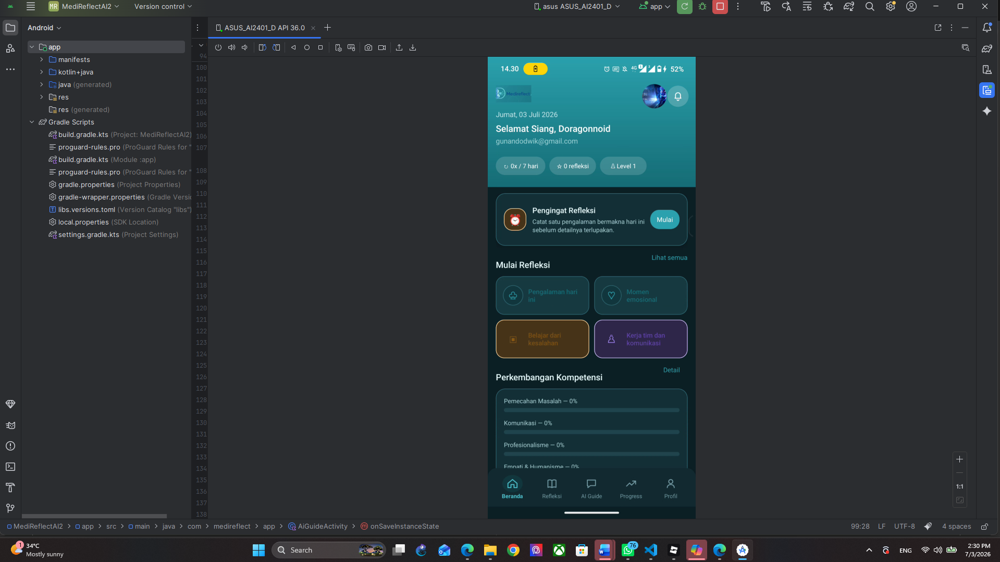

Refleksi Terpandu
Alur pertanyaan membantu pengguna menuliskan konteks kejadian, mengenali emosi, mengevaluasi hal yang berjalan baik atau kurang baik, dan merumuskan pembelajaran.

Aplikasi refleksi personal yang membantu pengguna mencatat pengalaman, memahami emosi, mengevaluasi tindakan, dan memantau perkembangan diri secara terstruktur.
Reflection adalah proyek aplikasi Android yang dirancang sebagai pendamping refleksi untuk konteks personal, akademik, maupun profesional.
Pengguna dapat memilih tema refleksi, mencatat situasi dan emosi, menjawab pertanyaan evaluatif, memperoleh bantuan AI Guide, serta melihat perkembangan kompetensi. Pengaturan privasi, pengingat, aksesibilitas, dan dukungan pengguna ditempatkan sebagai bagian penting dari pengalaman aplikasi.
Setiap modul membantu pengguna bergerak dari pengalaman mentah menuju pemahaman, pembelajaran, dan rencana tindak lanjut.
Alur pertanyaan membantu pengguna menuliskan konteks kejadian, mengenali emosi, mengevaluasi hal yang berjalan baik atau kurang baik, dan merumuskan pembelajaran.
Asisten percakapan menyediakan pertanyaan awal, bantuan memahami perasaan, pembelajaran dari situasi, serta saran komunikasi yang dapat disesuaikan dengan konteks pengguna.
Pengguna dapat menggunakan mikrofon untuk mengisi refleksi, mendengarkan teks, menyalin respons, atau membagikan hasil ketika membutuhkan cara interaksi alternatif.
Refleksi dapat dimulai dari pengalaman harian, momen emosional, pembelajaran dari kesalahan, maupun situasi kerja tim dan komunikasi.
Dashboard menampilkan jumlah refleksi, penyelesaian siklus, level, serta perkembangan area seperti pemecahan masalah, komunikasi, profesionalisme, empati, dan humanisme.
Pengguna dapat mengatur pengingat refleksi, notifikasi suara, getaran, pop-up, waktu interaksi yang lebih panjang, serta penyimpanan otomatis agar proses dapat dilanjutkan.
Bagian profil menyediakan identitas, akun cloud, pengaturan privasi dan keamanan, penghapusan riwayat AI, reset kata sandi, serta pilihan kontribusi data penelitian yang bersifat opsional.
Tersedia pengaturan ukuran dan ketebalan teks, kontras tinggi, mode penglihatan warna, TalkBack, pembacaan halaman, kecepatan suara, target sentuh besar, fokus keyboard, dan reduce motion.
Pilih topik, jelaskan konteks, identifikasi emosi, jawab pertanyaan evaluasi, gunakan AI Guide bila diperlukan, lalu simpan hasil dan pantau perkembangan.
Galeri menampilkan dashboard, profil, AI Guide, formulir refleksi, pengaturan privasi, dan rangkaian fitur aksesibilitas yang dikembangkan di Android Studio.
Hubungi Gunando Dwi Kusuma untuk berdiskusi tentang pengembangan aplikasi Android, pengalaman pengguna, fitur AI, aksesibilitas, website, atau proyek digital lainnya.
start a